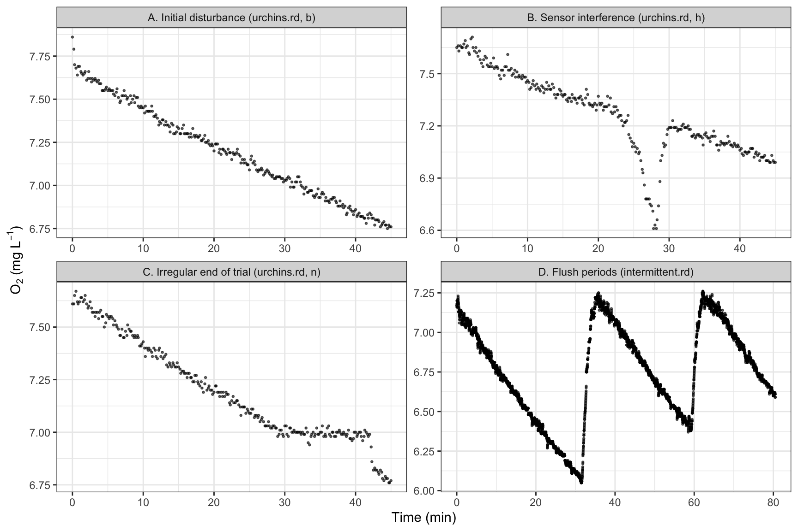
respR. (A) unstable start; (B) a sensor artefact mid-trial; (C) irregularities near the end; (D) flushes in an intermittent-flow trial.
Authors: Nicholas Wu
Estimating metabolic rate from raw oxygen traces with a structured, reproducible workflow following the respR R package (Harianto et al., 2019).
Metabolic rate (MR), the rate at which an organism uses energy, underpins almost every question in thermal ecology: how much energy an animal needs at a given temperature, how much it has left for growth and reproduction, and how close it is to its physiological limits. Because aerobic metabolism consumes oxygen in near-fixed proportion to the energy released, the most common way to estimate MR is indirect calorimetry: measuring the rate of oxygen consumption (\(\dot{M}\text{O}_2\) in water breathers, \(\dot{V}\text{O}_2\) in air breathers) and/or carbon dioxide production (Lighton, 2019; Wu et al., 2024).
Depending on the state of the animal, the rate is interpreted as a different metabolic rate metric:
| Metric | Definition (short) |
|---|---|
| Standard metabolic rate (SMR) | MR of an inactive, unstressed, post-absorptive adult ectotherm in its inactive phase (Chabot et al., 2016; Wu et al., 2024) |
| Basal metabolic rate (BMR) | The endotherm equivalent of SMR, measured within the thermoneutral zone (Wu et al., 2024) |
| Resting / routine metabolic rate (RMR) | MR of a resting animal when one or more SMR/BMR conditions cannot be met; routine MR includes spontaneous activity (Killen et al., 2021; Wu et al., 2024) |
| Maximum metabolic rate (MMR) | Maximum aerobic O2 uptake, e.g. during or immediately after exhaustive exercise (Killen et al., 2021) |
| Aerobic scope | MMR − SMR (absolute) or MMR / SMR (factorial) (Clark et al., 2013) |
All respirometry methods record oxygen over time; they differ in how oxygen is supplied to the animal (Figure 1).
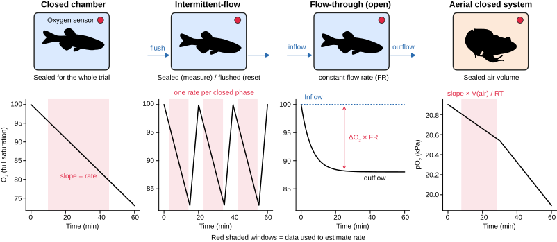
For closed and intermittent-flow respirometry, the oxygen uptake rate is
\[ \dot{M}\text{O}_2 = -\left(\beta_{\text{animal}} - \beta_{\text{blank}}\right) \times V_{\text{eff}} \]
where \(\beta\) is the slope of a linear regression of oxygen concentration against time for the animal chamber and for an empty (“blank”) chamber that measures background (microbial) oxygen use, and \(V_{\text{eff}}\) is the effective volume of water (respirometer + tubing − animal volume) (Steffensen, 1989; Svendsen et al., 2016). For flow-through respirometry, \(\dot{M}\text{O}_2 = (C_{\text{in}} - C_{\text{out}}) \times FR\), where \(FR\) is the flow rate (Lighton, 2019).
Turning a raw oxygen trace into a single number involves many decisions: which part of the trace to use, how long the regression window is, how to correct for background, which volume and which units. Each decision can change the final value, and most are never reported. A survey of 202 aquatic intermittent-flow respirometry papers found reporting to be poor and inconsistent: only 71% clearly stated body mass at the time of measurement, 34% how many measurements were used to estimate SMR, and more than 30% did not mention background respiration at all (Killen et al., 2021).
Analytical choices alone matter, where BMR estimates can be 12–30% higher when calculated from 10–15 min windows rather than 60 min windows (Hayes et al., 1992; Jacobs and McKechnie, 2014), shorter regression windows inflate MMR (Prinzing et al., 2021), and filtering slopes by a high r2 threshold can bias SMR upward (Chabot et al., 2021).
Manually selecting regions in a spreadsheet makes these decisions invisible and impossible to audit. A scripted, object-based workflow records every parameter alongside the result, reduces transcription and unit-conversion errors, and lets a reviewer or meta-analyst rerun the analysis from raw data (Harianto et al., 2019; Wu et al., 2024). Both the aquatic (Killen et al., 2021) and terrestrial (Wu et al., 2024) reporting guidelines recommend open-source, command-line tools such as respR (Harianto et al., 2019) or LoLinR (Olito et al., 2017) for exactly this reason.
| Problem | What it looks like | Why it matters | Where respR helps |
|---|---|---|---|
Non-numeric, missing (NA), infinite, duplicated or out-of-order time values |
Import errors, gaps, sensor drop-outs | Regressions fail or silently use the wrong rows | inspect() |
| Initial disturbance | Steep or curved section at the start | Handling stress, thermal and mixing equilibration inflate rates | inspect(), subset_data(), calc_rate(from, to) |
| Sensor interference / spikes | Sudden drops or jumps | One artefact can dominate a regression | inspect() rolling-rate plot |
| Activity bursts | Short steep sections | Fine for MMR, wrong for SMR/RMR | auto_rate() methods |
| Flush periods | Saw-tooth oxygen rises | Must be excluded from rate windows | calc_rate.int(), auto_rate.int() |
| Very low oxygen | Curvature as O2 falls | Animals may change behaviour or become O2-conformers | calc_rate(by = "oxygen"), oxy_crit() |
| Background respiration or sensor drift | Slow decline in a blank chamber | Animal rate is overestimated | calc_rate.bg(), adjust_rate() |
| Wrong volume or units | Rates orders of magnitude off | Classic source of published errors | convert_rate(), convert_MR() |
Here are some real examples from the data that come with respR (we load the packages properly in the next section).

respR. (A) unstable start; (B) a sensor artefact mid-trial; (C) irregularities near the end; (D) flushes in an intermittent-flow trial.
At minimum, your raw data need:
Everything up to the conversion step in respR is unitless, so it works for water or air, for uptake or production. Metadata you will need at the conversion step: oxygen and time units, effective volume, specimen mass, and (for some units) temperature, salinity and atmospheric pressure.
# Run once to install
install.packages(c("tidyverse", "respR"))# Load libraries
library(tidyverse) # data wrangling and plotting
library(respR) # respirometry processingThe workflow we will follow is shown as below. Each respR function returns an object that the next function understands, so the parameters of every step travel with the result.
We will analyse urchins.rd, a closed-chamber experiment on the sea urchin Heliocidaris erythrogramma (Carey et al., 2016) that is supplied with respR. It contains time in minutes, dissolved oxygen in mg L-1 for 16 urchins (columns a to p), and two blank chambers (b1, b2). The experiment was run at 20 °C, salinity 30 and 1.01 bar in 1.09 L respirometers.
The tutorial will use data from a close-chamber respiromety experiment, but the package is able to handle intermittent-flow and open-flow respirometry, and critical oxygen values (Pcrit).
The data are already in R. For your own files you would use read_csv() (see the aerial example below). It is good practice to store the experimental metadata in one place rather than typing numbers into later functions.
urchins <- as_tibble(urchins.rd)
urchins#> # A tibble: 271 × 19
#> time.min a b c d e f g h i j k
#> <dbl> <dbl> <dbl> <dbl> <dbl> <dbl> <dbl> <dbl> <dbl> <dbl> <dbl> <dbl>
#> 1 0 7.86 7.86 7.64 7.65 7.87 7.74 7.62 7.65 7.96 7.75 7.72
#> 2 0.2 7.87 7.79 7.6 7.71 7.87 7.72 7.61 7.66 7.97 7.72 7.71
#> 3 0.3 7.89 7.7 7.6 7.7 7.9 7.72 7.61 7.63 7.98 7.72 7.69
#> 4 0.5 7.9 7.68 7.6 7.72 7.92 7.74 7.62 7.66 7.97 7.72 7.7
#> 5 0.7 7.87 7.64 7.6 7.67 7.9 7.73 7.59 7.65 7.95 7.71 7.66
#> 6 0.8 7.82 7.69 7.61 7.61 7.88 7.7 7.6 7.65 7.94 7.7 7.63
#> 7 1 7.84 7.69 7.56 7.62 7.85 7.7 7.6 7.67 7.95 7.69 7.65
#> 8 1.2 7.84 7.66 7.59 7.63 7.83 7.69 7.6 7.69 7.96 7.7 7.65
#> 9 1.3 7.86 7.65 7.59 7.63 7.82 7.64 7.62 7.65 7.94 7.67 7.69
#> 10 1.5 7.81 7.64 7.59 7.57 7.85 7.64 7.61 7.66 7.96 7.66 7.67
#> # ℹ 261 more rows
#> # ℹ 7 more variables: l <dbl>, m <dbl>, n <dbl>, o <dbl>, p <dbl>, b1 <dbl>,
#> # b2 <dbl># Metadata for the experiment (from ?urchins.rd)
urchin_meta <- list(
oxy_unit = "mg/L",
time_unit = "min",
volume_L = 1.09, # effective volume of water (L)
temp_C = 20,
sal = 30,
pres_bar = 1.01,
mass_kg = 0.19 # example specimen mass used in the respR vignette
)A quick tidy plot of every chamber is the fastest way to spot problems.
urchins |>
pivot_longer(-time.min, names_to = "chamber", values_to = "o2_mgL") |>
mutate(type = if_else(chamber %in% c("b1", "b2"), "Blank", "Urchin")) |>
ggplot(aes(x = time.min, y = o2_mgL, colour = type)) +
geom_point(size = 0.4) +
facet_wrap(~ chamber, ncol = 6, scales = "free_y") +
scale_colour_manual(values = c(Blank = "#2b6cb0", Urchin = "black")) +
labs(x = "Time (min)", y = expression(O[2]~"(mg L"^-1*")"), colour = NULL) +
theme_bw() +
theme(legend.position = "top")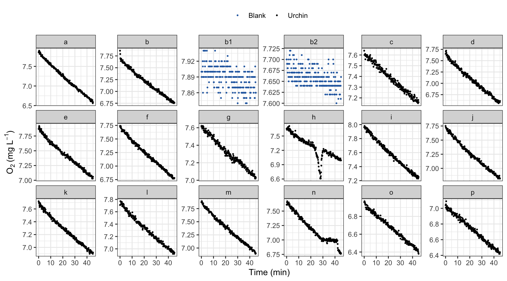
inspect() checks that the time and oxygen columns are numeric, finite, free of NAs, sequential, not duplicated and evenly spaced, and plots the data with a rolling rate.
inspect(urchins, time = 1, oxygen = 2:19)#> inspect: Multiple 'oxygen' columns selected. Note that subsequent functions in respR will by default use first oxygen column only.#> Warning: inspect: Time values are not evenly-spaced (numerically).#> inspect: Data issues detected. For more information use print().#>
#> # print.inspect # -----------------------
#> time.min a b c d e f g h i j k
#> numeric pass pass pass pass pass pass pass pass pass pass pass pass
#> Inf/-Inf pass pass pass pass pass pass pass pass pass pass pass pass
#> NA/NaN pass pass pass pass pass pass pass pass pass pass pass pass
#> sequential pass - - - - - - - - - - -
#> duplicated pass - - - - - - - - - - -
#> evenly-spaced WARN - - - - - - - - - - -
#> l m n o p b1 b2
#> numeric pass pass pass pass pass pass pass
#> Inf/-Inf pass pass pass pass pass pass pass
#> NA/NaN pass pass pass pass pass pass pass
#> sequential - - - - - - -
#> duplicated - - - - - - -
#> evenly-spaced - - - - - - -
#>
#> Uneven Time data locations (first 20 shown) in column: time.min
#> [1] 1 2 3 4 5 6 7 8 9 10 11 12 13 14 15 16 17 18 19 20
#> Minimum and Maximum intervals in uneven Time data:
#> [1] 0.1 0.2
#> -----------------------------------------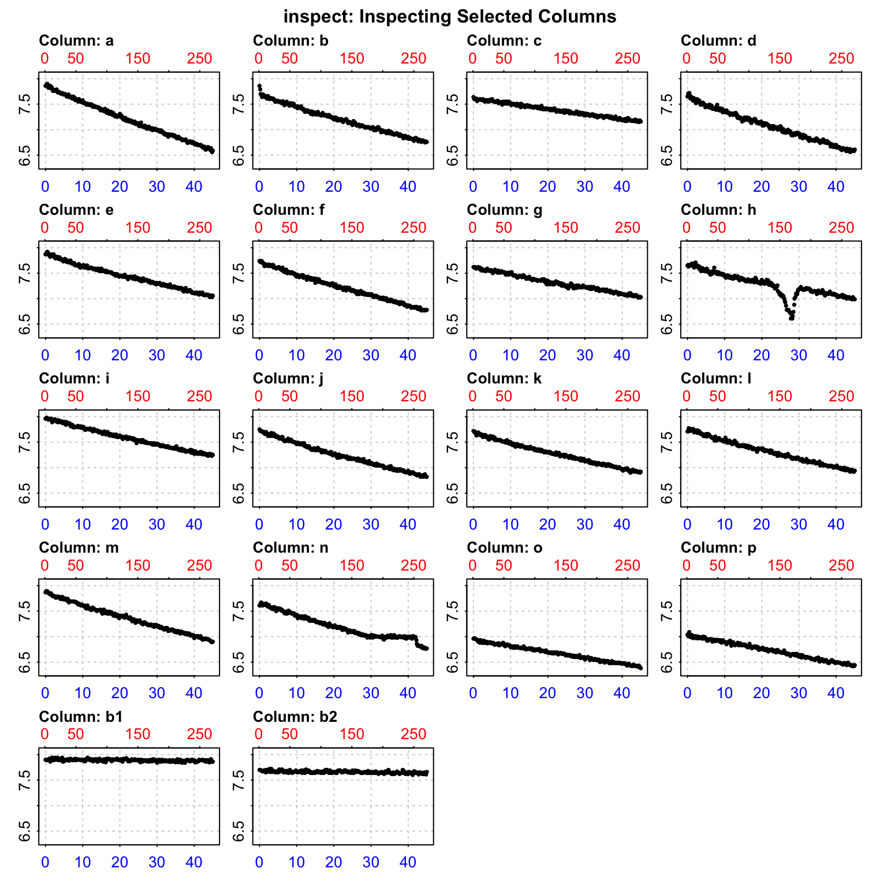
The only warning is that time is not evenly spaced. That is expected here (decimal minutes are rounded to 0.1 or 0.2 min), and respR uses actual time values, so it is safe. Now inspect a single urchin and save the result:
urchin <- inspect(urchins, time = "time.min", oxygen = "n")#> Warning: inspect: Time values are not evenly-spaced (numerically).#> inspect: Data issues detected. For more information use print().#>
#> # print.inspect # -----------------------
#> time.min n
#> numeric pass pass
#> Inf/-Inf pass pass
#> NA/NaN pass pass
#> sequential pass -
#> duplicated pass -
#> evenly-spaced WARN -
#>
#> Uneven Time data locations (first 20 shown) in column: time.min
#> [1] 1 2 3 4 5 6 7 8 9 10 11 12 13 14 15 16 17 18 19 20
#> Minimum and Maximum intervals in uneven Time data:
#> [1] 0.1 0.2
#> -----------------------------------------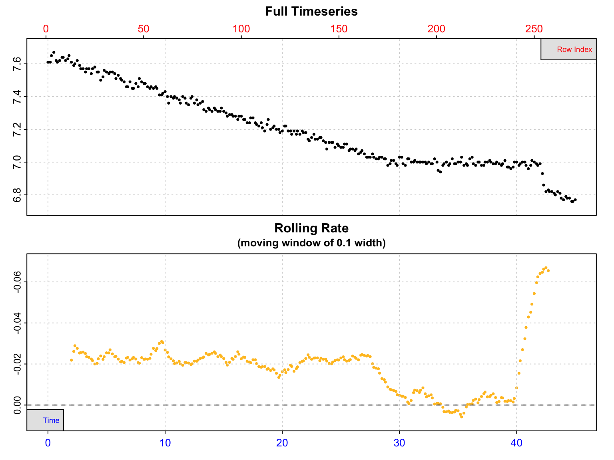
The bottom panel (rolling rate across 10% of the data) shows a stable rate of about −0.02 mg L-1 min-1 for the first ~29 minutes, after which the trace becomes irregular (the urchin interfered with the sensor). A regression across the whole trace would not represent routine metabolism.
calc_rate()Without extra arguments, calc_rate() fits a regression to the whole dataset (see below).
calc_rate(urchin) # whole trace (not appropriate here)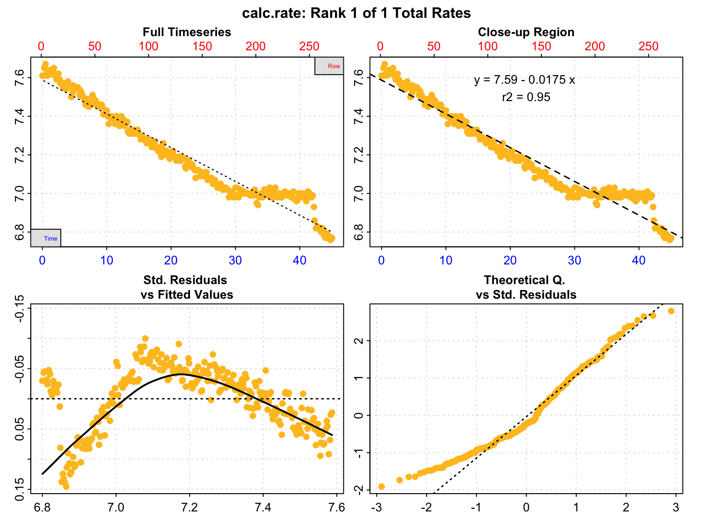
#>
#> # print.calc_rate # ---------------------
#> Rank 1 of 1 rates:
#> Rate: -0.01749242
#>
#> To see full results use summary().
#> -----------------------------------------Use from, to and by ("time", "row" or "oxygen") to choose a region. In this case, from 4 to 29 time points.
urch_rate <- calc_rate(urchin, from = 4, to = 29, by = "time")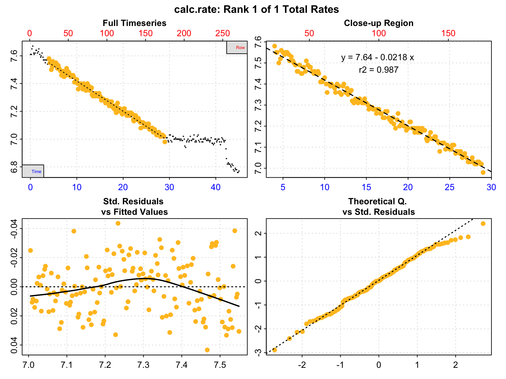
Show summary of the rate with the summary() function.
summary(urch_rate)#>
#> # summary.calc_rate # -------------------
#> Summary of all rate results:
#>
#> rep rank intercept_b0 slope_b1 rsq row endrow time endtime oxy endoxy
#> 1: NA 1 7.636454 -0.02177588 0.987 25 175 4 29 7.58 6.98
#> rate.2pt rate
#> 1: -0.024 -0.02177588
#> -----------------------------------------Note the negative rate: in respR, oxygen uptake is a negative slope. The r2 of 0.987 indicates a good linear fit.
auto_rate()Hand-picking a window is subjective. auto_rate() runs rolling regressions and, with the default method = "linear", uses kernel density estimation to find the most consistently linear regions. Other methods return the "lowest" or "highest" rates for a given window width (useful for SMR and MMR).
urch_auto <- auto_rate(urchin)#> auto_rate: Applying default 'width' of 0.2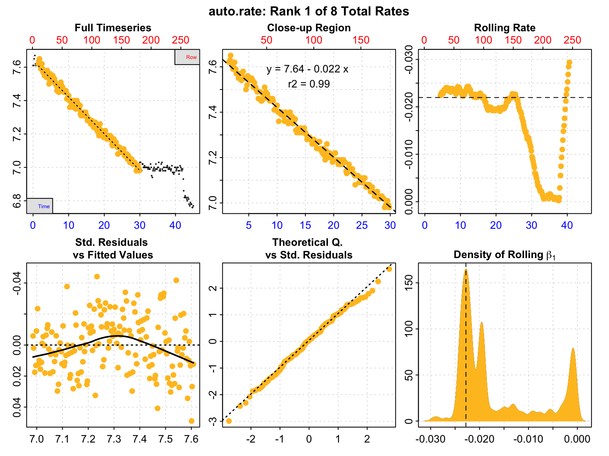
summary(urch_auto)#>
#> # summary.auto_rate # -------------------
#>
#> === Summary of Results by Kernel Density Rank ===
#> rep rank intercept_b0 slope_b1 rsq density row endrow time endtime
#> 1: NA 1 7.640570 -0.021969944 0.9900 164.954620 10 180 1.5 29.8
#> 2: NA 2 7.598477 -0.019950517 0.9460 107.181029 88 155 14.5 25.7
#> 3: NA 3 7.034767 -0.001154829 0.0544 79.007047 175 246 29.0 40.8
#> 4: NA 4 7.348348 -0.011177711 0.6820 18.212754 155 203 25.7 33.7
#> 5: NA 5 7.482069 -0.015764053 0.8130 15.126435 144 193 23.8 32.0
#> 6: NA 6 7.039336 -0.001278712 0.0675 12.671471 174 246 28.8 40.8
#> 7: NA 7 8.182843 -0.030776978 0.6920 4.610254 221 269 36.7 44.7
#> 8: NA 8 8.008165 -0.026455439 0.6050 3.210837 219 266 36.3 44.2
#> oxy endoxy rate
#> 1: 7.62 6.98 -0.021969944
#> 2: 7.31 7.07 -0.019950517
#> 3: 6.98 6.98 -0.001154829
#> 4: 7.07 6.98 -0.011177711
#> 5: 7.08 7.00 -0.015764053
#> 6: 7.02 6.98 -0.001278712
#> 7: 7.00 6.76 -0.030776978
#> 8: 6.99 6.79 -0.026455439
#>
#> Regressions : 218 | Results : 8 | Method : linear | Roll width : 54 | Roll type : row
#> -----------------------------------------auto_rate() is a tool, not an oracle. Always look at the plot and the summary, and check that the regions it chooses make biological sense (e.g. not right after handling, not during an artefact).
Microbes in the water also consume oxygen. Blank chambers run under identical conditions estimate this background rate. calc_rate.bg() calculates the rate in one or more blank columns.
bg_rate <- calc_rate.bg(urchins, time = 1, oxygen = 18:19)#>
#> # plot.calc_rate.bg # -------------------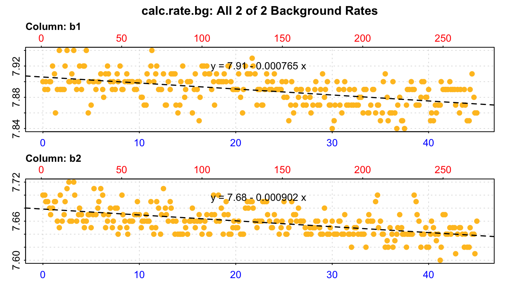
#> plot.calc_rate.bg: Plotting all 2 background rates ...
#> -----------------------------------------bg_rate#>
#> # print.calc_rate.bg # ------------------
#> Background rate(s):
#> [1] -0.0007650013 -0.0009018607
#> Mean background rate:
#> [1] -0.000833431
#> -----------------------------------------Then subtract it from the specimen rate with adjust_rate(). The default method = "mean" uses the mean of the two blanks. (For backgrounds that change over a long experiment, see the "linear", "exponential" and "paired" methods in ?adjust_rate.)
urch_rate_adj <- adjust_rate(urch_rate, by = bg_rate, method = "mean")#> adjust_rate: The 'by' input contains multiple background rates. The mean value will be used to perform adjustments.#> adjust_rate: Rate adjustments applied using "mean" method.Background was 3.8% of the urchin’s uptake here. Background typically grows over a long experiment (biofilm), so measure it at the start and end, and report how it was applied (Killen et al., 2021).
Until now nothing has had units. convert_rate() needs the units of the raw data, the effective volume (L), and optionally mass (kg) or area (m2). Some oxygen units (e.g. %Air, mL/L) also need temperature (t), salinity (S) and pressure (P, bar).
# Absolute rate: whole-animal mg O2 per hour
convert_rate(urch_rate_adj,
oxy.unit = urchin_meta$oxy_unit,
time.unit = urchin_meta$time_unit,
output.unit = "mg/h",
volume = urchin_meta$volume_L)#> convert_rate: Object of class 'adjust_rate' detected. Converting all adjusted rates in '$rate.adjusted'.#>
#> # print.convert_rate # ------------------
#> Rank 1 of 1 rates:
#>
#> Input:
#> [1] -0.02094245
#> [1] "mg/L" "min"
#> Converted:
#> [1] -1.369636
#> [1] "mgO2/hr"
#>
#> To see full results use summary().
#> -----------------------------------------# Mass-specific rate, saved as the final object
urch_rate_final <- convert_rate(urch_rate_adj,
oxy.unit = urchin_meta$oxy_unit,
time.unit = urchin_meta$time_unit,
output.unit = "mL/h/kg",
volume = urchin_meta$volume_L,
mass = urchin_meta$mass_kg,
t = urchin_meta$temp_C,
S = urchin_meta$sal,
P = urchin_meta$pres_bar)#> convert_rate: Object of class 'adjust_rate' detected. Converting all adjusted rates in '$rate.adjusted'.urch_rate_final#>
#> # print.convert_rate # ------------------
#> Rank 1 of 1 rates:
#>
#> Input:
#> [1] -0.02094245
#> [1] "mg/L" "min"
#> Converted:
#> [1] -5.43096
#> [1] "mLO2/hr/kg"
#>
#> To see full results use summary().
#> -----------------------------------------Use unit_args() to see every unit respR understands. Units are matched flexibly, so "mg/L", "mg l-1" and "mg per litre" are equivalent.
The volume is the volume of water, not of the respirometer. Subtract the animal’s volume (for most aquatic animals, mass in kg ≈ volume in L) and add the volume of any recirculation tubing.
summary(..., export = TRUE) returns a data frame with every parameter used: the regression window, r2, background, units, volume, mass and the final rate. This one row is your analysis record.
urch_final_df <- summary(urch_rate_final, export = TRUE) |> as_tibble()urch_final_df |>
select(time, endtime, rsq, rate, adjustment, rate.adjusted,
volume, mass, rate.output, output.unit)#> # A tibble: 1 × 10
#> time endtime rsq rate adjustment rate.adjusted volume mass rate.output
#> <dbl> <dbl> <dbl> <dbl> <dbl> <dbl> <dbl> <dbl> <dbl>
#> 1 4 29 0.987 -0.0218 -0.000833 -0.0209 1.09 0.19 -5.43
#> # ℹ 1 more variable: output.unit <chr>Sanity-check the result. A misplaced decimal or wrong unit is easy to miss, so compare your value with published rates of similar species, sizes and temperatures. convert_MR() converts between metabolic rate units:
convert_MR(urch_rate_final, to = "umol/h/g",
t = urchin_meta$temp_C, S = urchin_meta$sal, P = urchin_meta$pres_bar)#>
#> # print.convert_MR # --------------------
#>
#> Converting rates from 'convert_rate' input...
#>
#> Input: "mLO2/hr/kg"
#> [1] -5.43096
#>
#> Converted: "umolO2/hr/g"
#> [1] -0.2252776
#>
#> -----------------------------------------The respR closed-chamber vignette compares this value with published sea urchin rates of roughly 0.2–0.6 µmol O2 h-1 g-1 at 22–25 °C, so the result is in the right ballpark.
Because each function passes its object to the next, the entire analysis is a few readable lines, which is exactly what you would archive alongside the raw data:
urchin_n_result <- urchins |>
inspect(time = "time.min", oxygen = "n") |>
calc_rate(from = 4, to = 29, by = "time") |>
adjust_rate(by = calc_rate.bg(urchins, time = 1, oxygen = 18:19)) |>
convert_rate(oxy.unit = "mg/L", time.unit = "min",
output.unit = "mL/h/kg", volume = 1.09, mass = 0.19,
t = 20, S = 30, P = 1.01) |>
summary(export = TRUE)respR was designed for aquatic respirometry, but its rate functions are unitless, so the same inspect() → calc_rate() → adjust_rate() → convert_rate() chain works for air. The key difference is the conversion from the oxygen signal to an amount of oxygen.
respR’s pressure or %-saturation units for air
respR conversions of "%Air", "%Oxy", "hPa", "kPa", "Torr" and similar units use the solubility of oxygen in water. In air, a given partial pressure contains about 30 times more oxygen per litre than water at the same partial pressure. For gas-phase data, convert partial pressure to a molar concentration yourself with the ideal gas law, then give respR a unit that does not depend on solubility (e.g. "umol/L").
For a sealed, rigid chamber at constant temperature, the oxygen concentration in the air is
\[ C_{\text{O}_2} = \frac{p\text{O}_2}{R\,T} \]
where \(p\text{O}_2\) is the oxygen partial pressure (Pa), \(R\) = 8.314 J mol-1 K-1 and \(T\) is temperature (K). With \(p\text{O}_2\) in hPa, \(C_{\text{O}_2}\) (µmol L-1) \(= p\text{O}_2 \times 10^5 / (R\,T)\). The uptake rate is then the slope of \(C_{\text{O}_2}\) against time multiplied by the air volume (chamber volume − animal volume). Because moles of oxygen are counted directly from the partial pressure, CO2 accumulating in the chamber does not dilute the signal, and the result can be expressed as a gas volume at standard temperature and pressure (STPD: 0 °C, 101.325 kPa; 1 mol ≈ 22.414 L) (Lighton, 2019).
The example data below are simulated for teaching (see data/simulate_resp_aerial.py in the book repository): a 4.2 g lizard in a 150 mL glass chamber at 25 °C, with an optical oxygen sensor reading \(p\text{O}_2\) (hPa) every 10 s for 100 min, plus an empty blank chamber run in parallel. The true resting uptake used in the simulation is 22.5 µmol O2 h-1, so you can check how close the workflow gets.
Instrument exports typically have metadata lines at the top, column names with spaces and units, and separate date and time columns. Read the file, then rename columns and build a numeric time column.
# Use the local copy if you cloned the repository, otherwise read from GitHub
aerial_file <- "data/resp_aerial_lizard.csv"
if (!file.exists(aerial_file)) {
aerial_file <- "https://raw.githubusercontent.com/nicholaswunz/thermal_ecology_R/refs/heads/main/data/resp_aerial_lizard.csv"
}
aerial_raw <- read_csv(aerial_file,
comment = "#", # skip metadata lines
na = c("", "NA", "NaN"), # sensor drop-outs
show_col_types = FALSE)
glimpse(aerial_raw)#> Rows: 596
#> Columns: 7
#> $ Date <chr> "14/03/2025", "14/03/2025", "14/03/2025", "14/03/20…
#> $ Time <time> 09:12:00, 09:12:10, 09:12:20, 09:12:30, 09:12:40, …
#> $ `dt (s)` <dbl> 0, 10, 20, 30, 40, 50, 60, 70, 80, 90, 100, 110, 12…
#> $ `Ch1 Oxygen (hPa)` <dbl> 208.70, 208.74, 208.66, 208.43, 208.36, 208.48, 208…
#> $ `Ch2 Oxygen (hPa)` <dbl> 208.86, 208.81, 208.72, 208.72, 208.75, 208.86, 208…
#> $ `Temp (degC)` <dbl> 25.00, 25.01, 24.94, 24.99, 24.97, 25.00, 25.00, 24…
#> $ `Pressure (hPa)` <dbl> 1012.4, 1012.4, 1012.4, 1012.4, 1012.4, 1012.4, 101…aerial <- aerial_raw |>
rename(date = Date,
clock = Time,
dt_s = `dt (s)`,
o2_spec_hpa = `Ch1 Oxygen (hPa)`,
o2_blank_hpa = `Ch2 Oxygen (hPa)`,
temp_c = `Temp (degC)`,
baro_hpa = `Pressure (hPa)`) |>
mutate(date_time = dmy_hms(paste(date, clock)),
time_min = as.numeric(difftime(date_time, first(date_time),
units = "mins")))
aerial_meta <- list(
chamber_L = 0.150,
mass_g = 4.2,
air_L = 0.150 - 4.2 / 1000 # chamber minus animal volume (density ~1 g/mL)
)respR::format_time() is an alternative way to turn date-time strings into numeric time (in seconds from the first value).
inspect(aerial, time = "time_min", oxygen = c("o2_spec_hpa", "o2_blank_hpa"))#> inspect: Multiple 'oxygen' columns selected. Note that subsequent functions in respR will by default use first oxygen column only.#> Warning: inspect: Time values are not evenly-spaced (numerically).#> Warning: inspect: NA/NaN values detected in Oxygen column(s).#> inspect: Data issues detected. For more information use print().#>
#> # print.inspect # -----------------------
#> time_min o2_spec_hpa o2_blank_hpa
#> numeric pass pass pass
#> Inf/-Inf pass pass pass
#> NA/NaN pass WARN pass
#> sequential pass - -
#> duplicated pass - -
#> evenly-spaced WARN - -
#>
#> Uneven Time data locations (first 20 shown) in column: time_min
#> [1] 1 2 3 4 5 6 7 8 9 10 11 12 13 14 15 16 17 18 19 20
#> Minimum and Maximum intervals in uneven Time data:
#> [1] 0.1666667 1.0000000
#> NA/NaN locations in Oxygen column: o2_spec_hpa
#> [1] 252 253
#> -----------------------------------------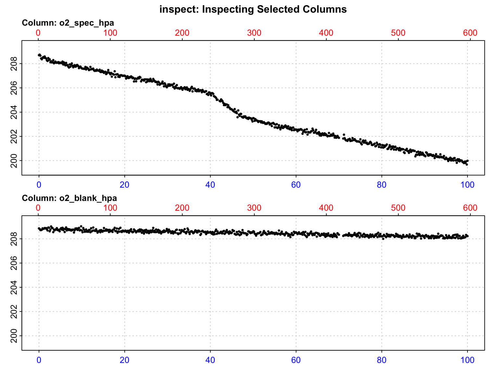
inspect() reports NA values in the specimen channel (two sensor drop-outs) and uneven time spacing (a 1-min logger pause near 70 min). Neither biases a regression on real time values once the NAs are removed. Also check the environmental columns: a sealed chamber is only valid if temperature is stable.
aerial |>
summarise(across(c(temp_c, baro_hpa),
list(mean = mean, min = min, max = max)))#> # A tibble: 1 × 6
#> temp_c_mean temp_c_min temp_c_max baro_hpa_mean baro_hpa_min baro_hpa_max
#> <dbl> <dbl> <dbl> <dbl> <dbl> <dbl>
#> 1 25.0 24.9 25.1 1013. 1012. 1013.aerial_clean <- aerial |>
drop_na(o2_spec_hpa)R_gas <- 8.314462618 # J mol-1 K-1
aerial_clean <- aerial_clean |>
mutate(temp_K = temp_c + 273.15,
o2_spec_umol = o2_spec_hpa * 1e5 / (R_gas * temp_K), # umol O2 per L air
o2_blank_umol = o2_blank_hpa * 1e5 / (R_gas * temp_K))spec_insp <- inspect(aerial_clean, time = "time_min", oxygen = "o2_spec_umol")#> Warning: inspect: Time values are not evenly-spaced (numerically).#> inspect: Data issues detected. For more information use print().#>
#> # print.inspect # -----------------------
#> time_min o2_spec_umol
#> numeric pass pass
#> Inf/-Inf pass pass
#> NA/NaN pass pass
#> sequential pass -
#> duplicated pass -
#> evenly-spaced WARN -
#>
#> Uneven Time data locations (first 20 shown) in column: time_min
#> [1] 1 2 3 4 5 6 7 8 9 10 11 12 13 14 15 16 17 18 19 20
#> Minimum and Maximum intervals in uneven Time data:
#> [1] 0.1666667 1.0000000
#> -----------------------------------------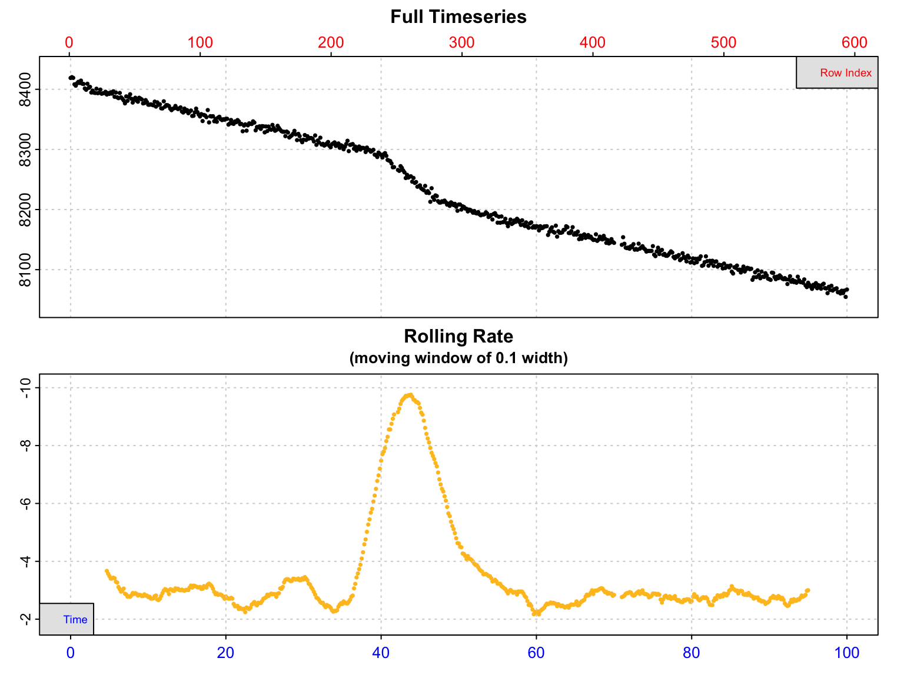
The rolling rate shows elevated uptake for the first ~8 min (handling), a burst of activity around 40–47 min, and stable resting uptake elsewhere. For a resting rate, use a window after settling and before the activity:
spec_rate <- calc_rate(spec_insp, from = 10, to = 40, by = "time")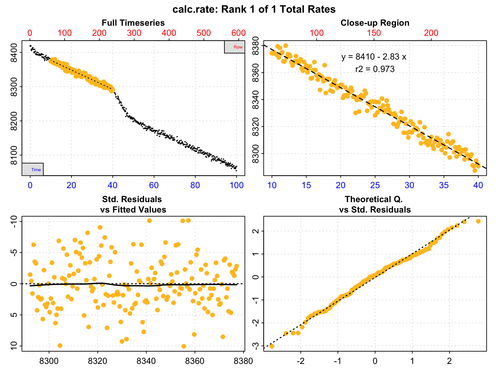
In air there is little microbial respiration, but blanks still capture sensor drift, small leaks and respiration of any substrate in the chamber.
blank_insp <- inspect(aerial_clean, time = "time_min", oxygen = "o2_blank_umol",
plot = FALSE)#> Warning: inspect: Time values are not evenly-spaced (numerically).#> inspect: Data issues detected. For more information use print().#>
#> # print.inspect # -----------------------
#> time_min o2_blank_umol
#> numeric pass pass
#> Inf/-Inf pass pass
#> NA/NaN pass pass
#> sequential pass -
#> duplicated pass -
#> evenly-spaced WARN -
#>
#> Uneven Time data locations (first 20 shown) in column: time_min
#> [1] 1 2 3 4 5 6 7 8 9 10 11 12 13 14 15 16 17 18 19 20
#> Minimum and Maximum intervals in uneven Time data:
#> [1] 0.1666667 1.0000000
#> -----------------------------------------blank_rate <- calc_rate.bg(blank_insp)#> calc_rate.bg: Applying column default of 'time = 1'#> calc_rate.bg: Applying column default of all non-time column(s) as 'oxygen'#>
#> # plot.calc_rate.bg # -------------------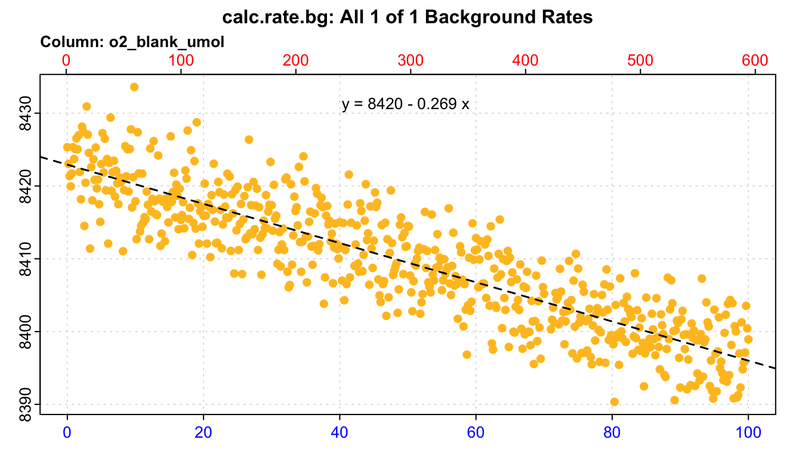
#> plot.calc_rate.bg: Plotting all 1 background rates ...
#> -----------------------------------------spec_rate_adj <- adjust_rate(spec_rate, by = blank_rate)#> adjust_rate: Rate adjustments applied using "mean" method.Because the data are now in µmol L-1, convert_rate() needs no temperature, salinity or pressure, and the volume is the air volume.
aerial_final <- convert_rate(spec_rate_adj,
oxy.unit = "umol/L",
time.unit = "min",
output.unit = "umol/h",
volume = aerial_meta$air_L)
aerial_final_mass <- convert_rate(spec_rate_adj,
oxy.unit = "umol/L",
time.unit = "min",
output.unit = "umol/h/g",
volume = aerial_meta$air_L,
mass = aerial_meta$mass_g / 1000) # kgTerrestrial studies usually report \(\dot{V}\text{O}_2\) as mL O2 h-1 at STPD.
aerial_result <- tibble(
umol_h = abs(aerial_final$rate.output),
umol_h_g = abs(aerial_final_mass$rate.output),
mL_h_STPD = umol_h * 22.414 / 1000,
mL_h_g_STPD = umol_h_g * 22.414 / 1000
)
aerial_result#> # A tibble: 1 × 4
#> umol_h umol_h_g mL_h_STPD mL_h_g_STPD
#> <dbl> <dbl> <dbl> <dbl>
#> 1 22.4 5.34 0.502 0.120The workflow recovers 22.4 µmol O2 h-1, close to the true value of 22.5 µmol h-1 used in the simulation.
Two complementary checklists exist: Killen et al. (2021) for aquatic intermittent-flow respirometry and Wu et al. (2024) for terrestrial (aerial) respirometry. Both are organised around the same ideas: describe the set-up, the animals, the measurement conditions, the data processing and the statistics, and share data and code (Parker et al., 2018; Whitlock, 2011). For the processing steps covered here, report:
| Step | Report | Where it lives in respR |
|---|---|---|
| Data acquisition | Sensor/analyser type and model, sampling interval, calibration | Your metadata |
| Quality control | Data excluded and why (artefacts, activity, drop-outs) | inspect() plots, your code |
| Rate extraction | Method (manual window, auto_rate() method), window width, wait/measure phases, number of slopes used, any r2 criterion |
$summary (time, endtime, rsq) |
| Background | How and when measured, how applied, its size relative to animal rates | adjust_rate() (adjustment) |
| Conversion | Units, effective volume, mass (and how measured), t, S, P, STP definition, equations used | convert_rate() (volume, mass, S, t, P) |
| Final metric | SMR/RMR/MMR definition and estimator | Your code |
| Software | R and package versions, citations | sessionInfo(), citation() |
| Data and code | Raw traces + processing scripts + README/metadata in a public repository | Dryad, Zenodo, OSF, Figshare |
A methods paragraph can be generated directly from the analysis objects, so the text always matches the numbers:
Oxygen uptake of urchin n was calculated in R (R version 4.6.0 (2026-04-24)) with
respRv2.3.4 (Harianto et al., 2019) as the slope of a linear regression of oxygen concentration against time between 4 and 29 min (r2 = 0.987), adjusted for the mean background rate of two blank chambers (-8.33^{-4} mg L-1 min-1), and converted to mLO2/hr/kg using an effective volume of 1.09 L and a mass of 0.19 kg.
respR are aquatic. For gas-phase data, convert with the gas law, account for water vapour and CO2 where fractions are measured, and define STP (Lighton, 2019; Withers, 2001; Wu et al., 2024).When using respR, please cite Harianto et al. (2019). If you have raw oxygen traces that are not yet supported, contact the package maintainer, Nicholas Carey.